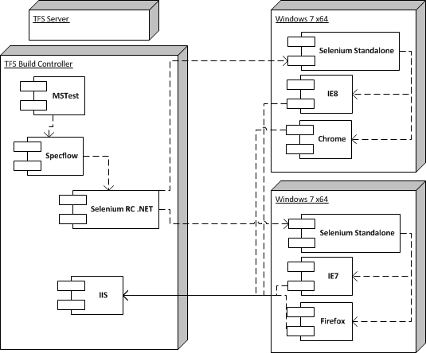

Specflow and Selenium
Table of Contents
Introduction
Here at cmgroup we have been working on some HTML prototyping. Whilst doing this we have been working on improving our automated testing. This blog entry outlines our strategy and how we have achieved it.
The Problem
Our requirements for the automated testing were to cover:
- Multi browser / platform testing of HTML output
- Write the test scripts in a language suitable for product management
- Leverage the testing framework provided by VS2010
The Solution
The following technology was chosen. MSTest for obvious reasons; the requirement was there to use it. We chose Specflow as it is a very nice BDD framework using Gherkin scripts. I have posted examples of its use previously on this blog and it meets the 2nd requirement above. Thirdly we chose to use selenium as it provides some very good dotnet bindings and provides us with the ability to test cross browser and platform.
Deployment
Our test setup is shown in the following diagram:

Firstly we have selenium standalone running on two nodes, one Vista and one Windows 7, so we can test on different browsers and versions. We are using the current beta version of Selenium2, which currently has some stability problems. There is a push to fix a whole load of bugs this week in selenium and we are hoping beta2 is released shortly.
We are also running against real browsers using the Chrome Driver, Firefox Driver and Internet Explorer Driver, so these two nodes have to have a desktop available, i.e. A user logged in at all times, which is a only a minor pain.
Our TFS Build Controller has IIS installed with a virtual directory set up against the checked out HTML, JavaScript etc that we are testing against. This allows our browser hosts to have a single up to date web server to call into.
The unit tests are then run within MSTest on the build controller, executing the Specflow tests, which in turn drive the .NET version of Selenium RC, which executes operations on the remote instances of selenium server.
Writing the Tests
A typical SpecFlow scenario would be written something like the following:
1: Scenario Outline: Display Next Prev Buttons 2: Given I am using <browser> on <seleniumhost> 3: And A course exists 4: When I launch the course 5: Then The course is launched in my default browser 6: And The next and previous buttons are visible in the browser 7: Examples: 8: | browser | seleniumhost | description | 9: | ie | 192.168.10.126 | IE8 on Win 7 64bit | 10: | ie | 192.168.10.127 | IE7 on Vista 64bit | 11: | firefox | 192.168.10.126 | FF3.6 on Win 7 64bit | 12: | chrome | 192.168.10.126 | Chrome 8 on Win 7 64bit |
This sets up the tests to execute against the listed hosts, using the specifed browsers. This scenario would be run 4 times against with a test on IE7 on Vista.
Summary
We are presuming that the next beta of selenium2 and the final version are going to solve our stability problems. We shall then have a great test environment for BDD, able to test our apps using the MSTest framework and BDD and believe this will give us a greater confidence in our apps meeting the User Acceptance Criteria our Product Owners are providing.